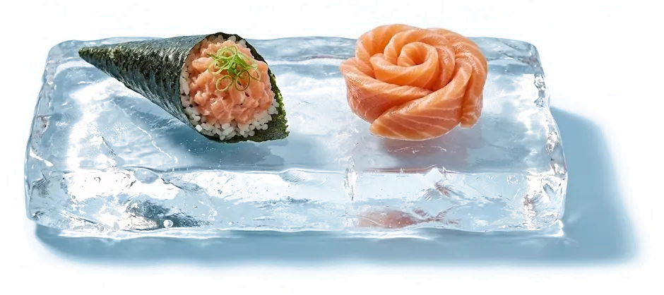
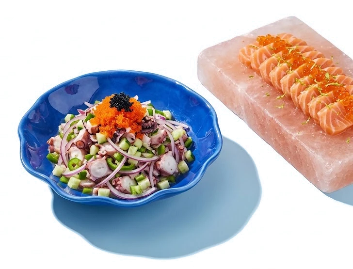
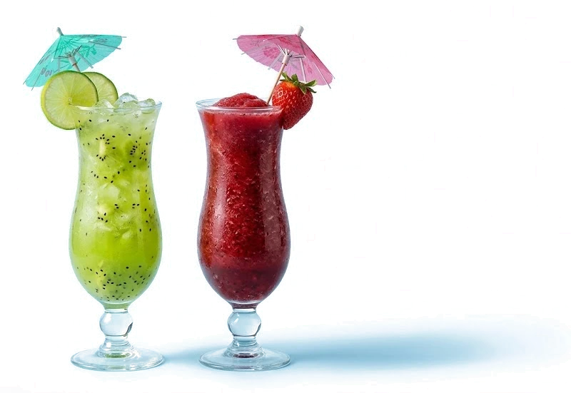

Yukusue Sushi Antártico — restaurante japonês em São Bernardo do Campo

Pratos

Bebidas e avaliações

4,3 2.722 avaliações no Google
Ambiente aconchegante, muito bem estruturado e tranquilo de conversar, a comida é extremamente saborosa e o atendimento é rápido.
Fomos prontamente recebidos. […] O espaço é bem iluminado, limpo e possui música ambiente confortável (nada exagerado).